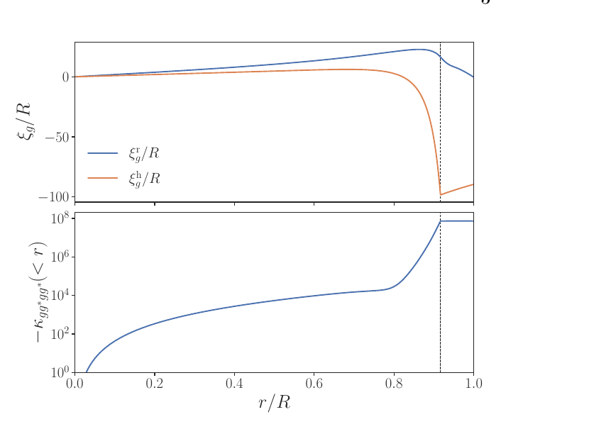
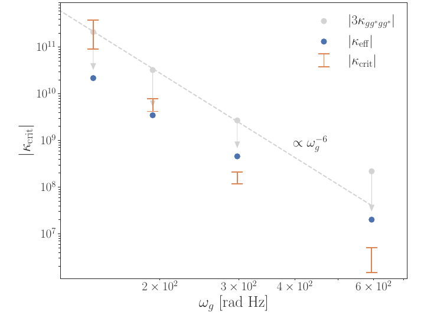
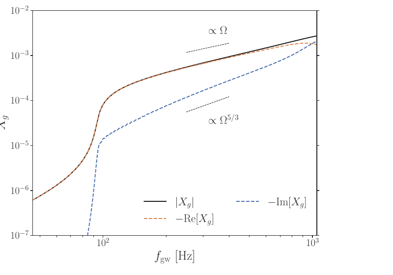
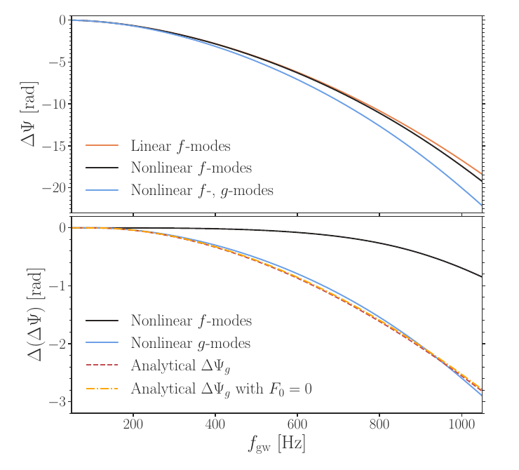

Probing Neutron-Star Stratification via Gravitational Waves
Compositional gradients within a star (variations in what the star is made of at different depths) provide a restoring force called buoyancy. If a blob of stellar material is displaced from its equilibrium position, buoyancy pushes it back, causing it to oscillate rather than settle immediately (if the star is stably stratified). These oscillations belong to a family of internal modes called g-modes. Because their oscillations depend on the star's composition profile, they offer key insight into what a star is made of.
This is especially valuable for neutron stars, where the overall structure is still poorly understood. G-modes therefore provide a rare window into neutron star composition. My work places g-modes in the context of gravitational-wave astronomy. In the presence of a binary companion, a neutron star receives a quasi-periodic tidal forcing that sweeps through the frequencies of its g-modes. When the forcing frequency matches a mode's frequency, the mode undergoes a dynamic evolution called resonance.
To work this out concretely, I model a 1.4–1.4 M☉ neutron-star binary built from the SLy4 equation of state (radius ≈ 13 km), and focus on its longest-wavelength g-mode (radial order n = 1, angular order l = |m| = 2), which has an eigenfrequency of about 95 Hz. The figure below shows this mode's spatial profile: it is oscillatory through most of the star's core but becomes evanescent once it reaches the crust. More importantly, the strength of its nonlinear self-coupling — the quantity that ultimately controls everything below — builds up almost entirely in a thin shell just interior to the crust, between about 80–90% of the stellar radius.

In the standard linear picture, this g-mode would simply be briefly amplified as the tidal forcing sweeps through its resonance (2Ω = ωg) and then fade, leaving little imprint on the signal. What I find instead is that the mode's self-coupling makes its oscillation frequency depend on its own energy, and this creates a feedback loop: as the driving frequency approaches the mode's natural frequency, the mode's growing amplitude pushes its own frequency to keep pace with the driving, rather than letting it sweep past. I quantify this with an effective coupling coefficient κeff and show that the lock only takes hold if |κeff| exceeds a critical value κcrit set by the binary's inspiral rate. For this NS model, |κeff| ≈ 2×107, roughly ten times κcrit, so the lock initiates comfortably. Crucially, κcrit grows much more steeply with mode order than the coupling strength itself, so this condition is satisfied only for the very lowest-order (n = 1) g-mode — the n = 2, 3, 4 modes fall short by one to several orders of magnitude and never lock.

A second coefficient, γeff, governs whether the lock can be sustained once it starts: it captures an energy exchange with the star's fundamental mode that offsets the damping the mode would otherwise feel as the binary inspirals. For the n = 1 mode, I find γeff ≈ 5γcrit, comfortably enough to keep the lock alive through nearly the entire merger. The result is a mode amplitude that, instead of resonating briefly and decaying, grows monotonically and coherently with the orbit — its real part tracking the orbital frequency Ω and its imaginary part tracking Ω5/3, until the two become comparable near 1 kHz and the lock finally starts to break.

Because the locked mode keeps growing with the orbit instead of fading after a brief resonance, it leaves a much larger imprint on the gravitational-wave signal than linear theory would predict: an extra phase shift of about 3 radians at a GW frequency of 1.05 kHz, roughly an order of magnitude beyond the standard estimate, which I confirm both numerically and with an independent analytical calculation. I also checked one natural way the lock could be cut short — viscous heating where the mode's motion shears against the crust — and found it to be self-limiting: at the densities and energies involved, the dissipated heat drives the crust to around 1010 K, which suppresses the very viscosity responsible for the damping, so the lock survives. Since the size of this phase shift is set by the g-mode's frequency — which is itself set by the star's compositional (Brunt-Väisälä) profile — a measurement of it in future gravitational-wave data would offer a direct probe of neutron-star stratification, one that has so far been overlooked because g-modes couple only weakly to the tidal field.
